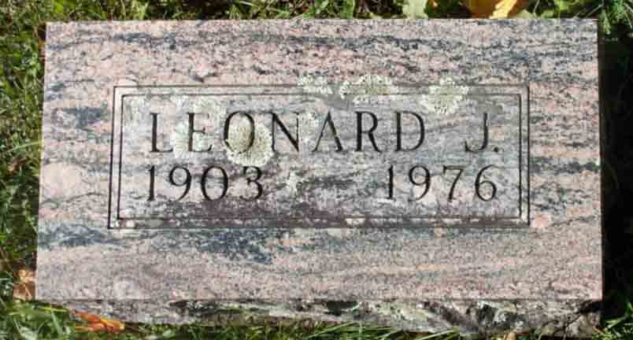
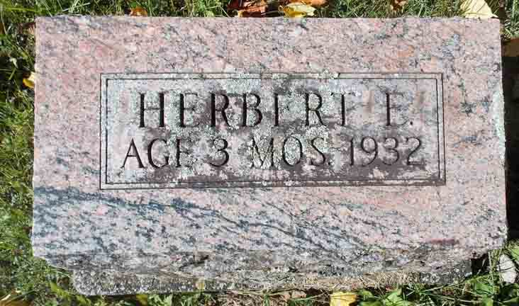

Documentation for Leonard J. Vining - (1) Louise Chatfield; (2) Marguerite Frasier
Death Data
Gravestone for Leonard John Vining, in Maplecrest Cemetery, Windham, Greene County, New York (from Find A Grave):

Gravestone for Herbert E. Vining, son of Leonard John Vining and Louise (Chatfield) Vining, in Maplecrest Cemetery, Windham, Greene County, New York (from Find A Grave):
